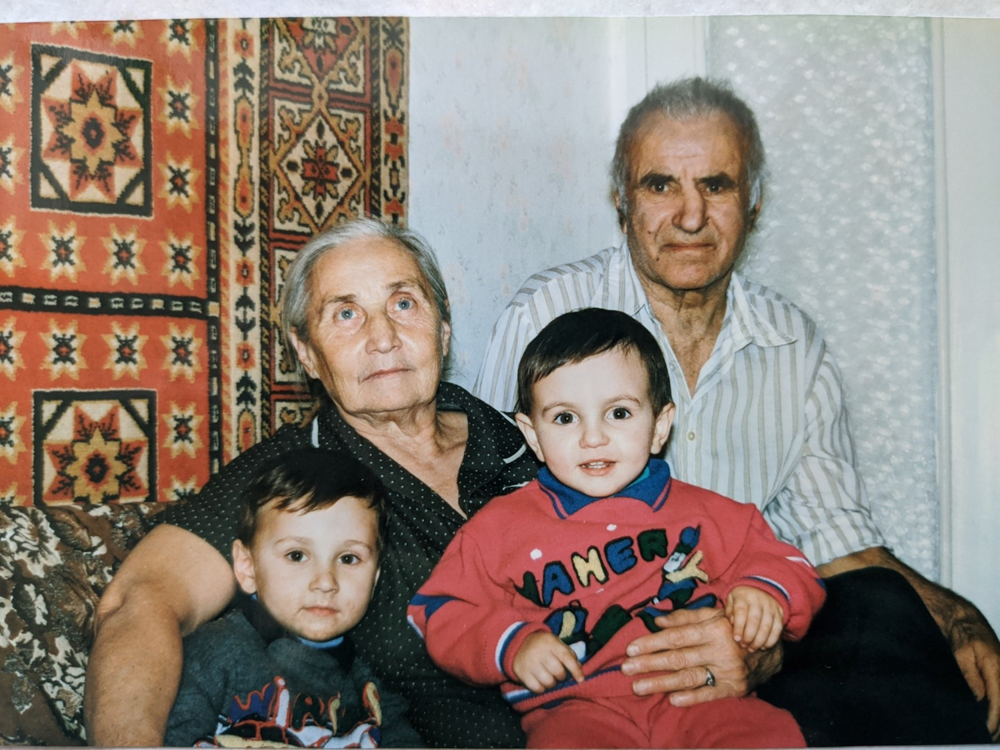
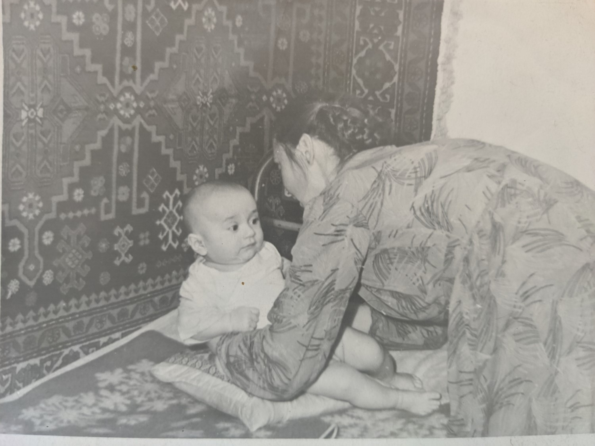

Ацута (Ацута) Елена Васильевна
 Примерно 1965г. (фрагмент). Примерно 1965г.
Примерно 1965г. (фрагмент). Примерно 1965г..
Родилась: 08.02.1938, Троицк, Заларинского р.
Возраст: 84
Место жительства: Иркутск
Место рождения: г. Троицк, Заларинского р.
Отец: Ацута Василий Алексеевич
Мать: Ацута (Куликова ) Людмила Николаевна
Брат: Ацута Валентин Васильевич
Единоутробная сестра: Тихова Нинна Николаевна
Отец детей: Григорян Джанибек Игитович
Сын: Ацута Андрей Джанебекович
Сын: Ацута Эдуард Джанебекович
Рисунок1: Ангарск. Рисунок18.  Примерно 1965г. Примерно 1965г. Примерно 1965г. Примерно 1965г..  Рисунок19. Рисунок19.  Рисунок9. Рисунок9. |